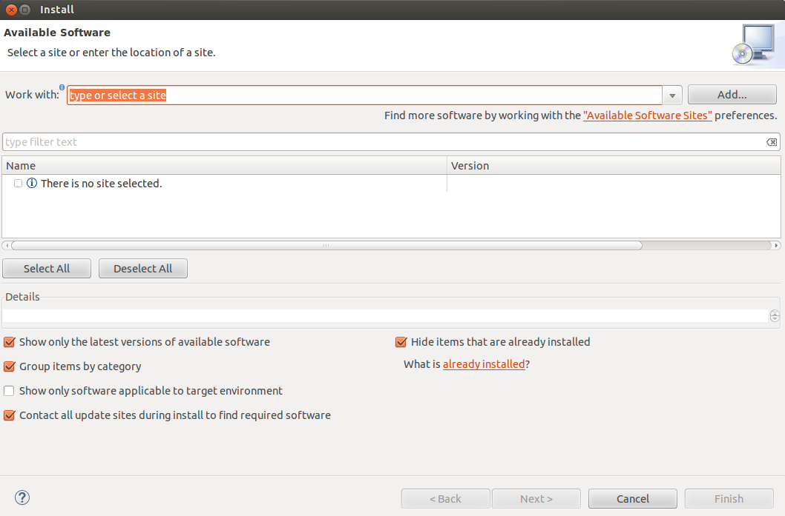
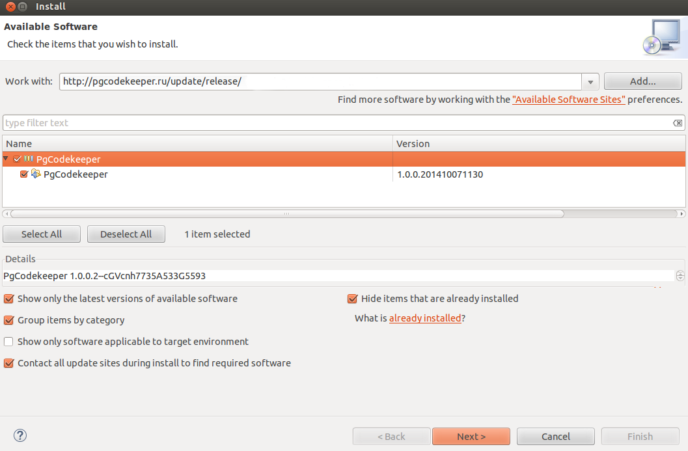
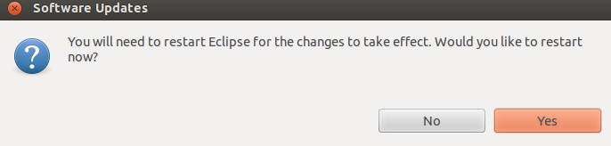

Для работы плагина требуется установить его в Eclipse. Для этого необходимо загрузить Eclipse подходящий для Вашей платформы на сайте https://www.eclipse.org/downloads, либо использовать уже скачанный дистрибутив Eclipse.
Для установки плагина нужно выбрать меню Help - Install New Software. Появится окно позволяющее устанавливать плагины в Eclipse.

В поле Work With нужно нажать на кнопку Add и в диалоге ввести адрес репозитория с плагином http://storage.chelny.taximaxim.ru/codekeeper/p2/codekeeperplugins/. В поле имя ввести удобное имя, например pgCodeKeeper.
Затем в списке выбрать пакет pgCodeKeeper, нажать Next, Next, согласиться с пользовательским соглашением, и начнется установка.

Согласиться на установку и перезапуск Eclipse.

На этом Установка плагина закончена.